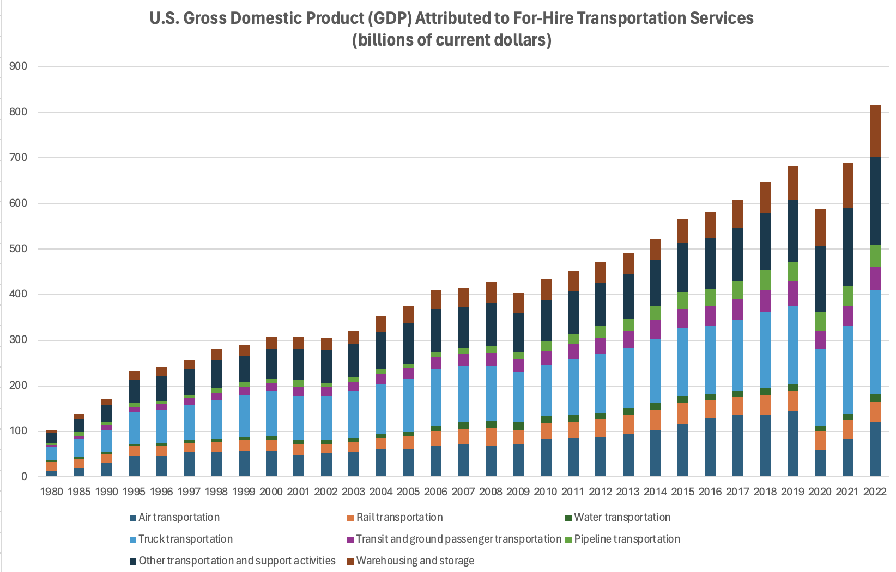

2 Abigail Tako
This page contains all of Abigail Tako’s Submissions this semester organized into different sections.
2.1 Monday
1st Dashboard - Economics_ggplot2
Click on this link to see and interact with the dashboard! https://public.tableau.com/views/AbigailTako_Econoomics_dashboard/Dashboard1?:language=en-
Variables
Pce (Personal Consumption Expenditure)
Represents the total amount spent by consumers in a year
Pop (Population)
Represents the total population for each year
Uempmed (Median Unemployment Duration)
Represents the median time people remain unemployed
Unemploy (Unemployment)
Represents the total number of unemployed individuals per year
Description
Figure 1.1
Box plots showing the distribution of the four variables (Pce, Pop, Uemmped, Unemploy) across multiple years. This gives insight into the central tendency, spread, and outliers for each variable.
Figure 1.2
A bar chart showing the unemployment count for each year, with different colors representing different years, emphasizing trends in unemployment across time.
Figure 1.3
Stacked charts showing how Pce, Unemploy, Uempmed, and Pop have changed over the years. This provides a timeline for comparing how these variables behave in relation to one another, revealing patterns of economic cycles.
2nd Dashboard - Individual Project
Click on this link to see and interact with the dashboard! https://public.tableau.com/views/IndividualProjectTableau_17262585364150/Dashboard1?:language=en-US&:sid=&:redirect=auth&:display_count=n&:origin=viz_share_link
Variables
Crashes
Total number of traffic crashes reported
Fatalities
Number of individuals killed in traffic-related incidents
Injured persons
Total number of people injured in traffic accidents
Vehicles-miles traveled
Total number of miles driven by all vehicles, measured in millions
Description
Figure 1.1
This line chart displays the overall trends in key traffic-related variables over the years. Crashes (green line) have shown a slight decline but remain relatively stable. Fatalities (red line) have stayed consistent, fluctuating around 30,000 to 40,000 per year. Injured persons (blue line) exhibit a gradual downward trend, with a noticeable dip in 2015, possibly due to reporting changes or other factors. Vehicle-miles traveled (brown line) show a sharp drop in 2015 but are generally consistent, indicating steady road usage over the years. The chart provides a high-level overview of the interactions between these variables over time.
Figure 1.2
It shows a decreasing trend in injuries until around 2015, after which it fluctuates. Fatalities also display minor fluctuations but generally remain around the 30,000 to 40,000 range per year.
Figure 1.3
The boxes represent the interquartile range, while the whiskers capture the spread of data, offering a clear view of central tendencies (mean) and variability across the years 2000 to 2023. This chart highlights the typical values and outliers for crashes, fatalities, injuries, and miles traveled.
2.2 Wednesday
2.2.1 Week 1
2.2.2 Week 2
Histogram
In week 2, data sets that I am using is air quality data set. After cleaning the data set explained below, select all the data and insert the histogram chart to create the visualization of the data. The variables for the histogram chart is only the ozone. From the histogram, it shows the distribution of the ozone, most of the ozone are 1 to 25 ppm.
clean data
First, from the data, we are going to clean the data, by removing those that are have the value NA or not available.
1. Select all the data, and search for the filter.
2. Then, it will appear the drop down menu for each column, select the drop down menu on the first column which is Ozone
3. Select NA. To remove it, select all from the row that has NA until the bottom and select delete rows 6-151.
4. Select the drop down menu on column Ozone, select all and apply, it will give back the table, however there’s no NA anymore on the Ozone.
Looking at the data, there still some NA on the column B for Solar.R. Repeat the way just like before. Next, to make it earlier to read the data, sort the day and month to be in order. Select the column for month, click the sort from smallest to largest, do the same for day.
Scatter plot
Using the air quality data sets, click on column A(ozone) and D (temperature) to show the correlation between both of them. After clicking on both column, I’m going to insert the scatter plot. The scatter plot shows a relationship between Ozone levels (y-axis) and Temperature (x-axis). The general trend indicates a positive correlation: as the temperature increases, the ozone level tends to increase as well.
Pivot Table & Chart
To make a pivot table and chart, first select all the data, and click insert. On the let corner, it will appear the pivot menu, press that and select the create own pivot table. I select and drag ozone, temperature, Solar. R, and Wind to the value, for the row I’ll put only the month. Then, I change the value field settings to average, this is to provide the average of ozone, temperature, Solar. R, and Wind monthly. After doing the pivot table, select that pivot table and insert the pivot chart to create the visualization.
From the pivot table and chart above, it shows that ozone levels appear to increase with higher temperature and solar radiation but decrease with higher wind speeds.
Next, I’m going to provide another pivot table, that shows the average of ozone, temperature, Solar. R, and Wind daily from day 1 to 31. To do that, select again the first table, the one that was cleaned, then again select the pivot table and choose the create own pivot table.
I select and drag ozone, temperature, Solar. R, and Wind to the value, for the row I’ll put only the day. Then, I change the value field settings to average, this is to provide the average of ozone, temperature, Solar. R, and Wind per day.
Now, I’m going to add the pivot chart from that new pivot table. I choose two charts, from those two I can create conclusion and better visualizations.
From the chart presented below, the average daily of Temperature and Wind each have a positive correlation, however not with the average daily of Solar. R and the Ozone. Also, on day 15 it shows the lowest average of ozone and solar. r.
Third, I’m going to make another pivot table that can show more detailed on each month per day.I’m going to choose to present the 5th month, so I’m going to press the drop down menu from the column “month” and select only the 5. Next, the table will only provide the information from month 5, day 1-31 and the sum of ozone, wind, temp, and solar.r.
From the chart, we can see that, on day 30 from the 5th month, it shows the highest sum of ozone.
2.3 Friday - Midterm Projects
2.3.1 Week 1
2.3.2 Week 2
Who collected the data
The source that I chose is National Transportation Library (NTL) Data. There are lots of data sets from NTL, which can be access through https://ntl.bts.gov/ntl. Data set that I chose is motor vehicle safety. This data set is collected by U.S. Department of Transportation, National Highway Traffic Safety Administration, National Center for Statistics and Analysis, and Fatality Analysis Reporting System (FARS) Database. I’m interested in this one, because it is critical to understand trends in road safety, which is a major public concern. The data that I collect is from this link https://www.bts.gov/content/motor-vehicle-safety-data.
Purpose
Monitoring the trends in motor vehicle safety in the U.S., including fatalities, injuries, and crashes. It serves to assess the effectiveness of safety regulations, technology advancements, and policy interventions over time. From the visualizations, it can improve the safety measures and highlight the effectiveness of road safety interventions over the years, making it highly valuable for assessing long-term changes in traffic-related fatalities and injuries.
Variables
Fatalities - total number of deaths from motor vehicle crashes
Injured persons - total number of people injured in motor vehicle accidents
Crashes - total number of motor vehicle crashes
Vehicles miles traveled - total number of miles driven by vehicles
2.3.3 Week 5
Mid Term Project

Variables in the Graph:
Time (X-axis)
Years from 1980 to 2022
GDP (Y-axis)
U.S. Gross Domestic Product (GDP) attributed to for-hire transportation services, measured in billions of current dollars.
Categories of Transportation Services (Stacked Bars)
- Air transportation
- Truck transportation
- Rail transportation
- Water transportation
- Pipeline transportation
- Transit and ground passenger transportation
- Other transportation and support activities
- Warehousing and storage
Key Insights
The graph illustrates the consistent growth of the U.S. GDP from for-hire transportation services between 1980 and 2022. Truck and air transportation sectors contribute the largest shares, with noticeable growth across all categories post-2010. The overall upward trend reflects the increasing economic importance of transportation services in the U.S.
2.3.4 Week 8
Project Presentation
Brief explanation
| The data set that we chose as a group is the U.S. GDP attributed to for-hire transportation services between 1980 and 2022. |
Variables
Year
The year for which the GDP data is recorded from 1980 to 2022.
Air transportation
GDP attributed to for-hire air transportation services (billions of current dollars).
Rail transportation
GDP attributed to for-hire rail transportation services (billions of current dollars).
Water transportation
GDP attributed to for-hire water transportation services (billions of current dollars).
Truck transportation
GDP attributed to for-hire truck transportation services (billions of current dollars).
Transit and ground passenger transportation
GDP attributed to for-hire transit and ground passenger transportation services, such as buses, taxis, etc. (billions of current dollars).
Pipeline transportation
GDP attributed to pipeline transportation services, which typically include transportation of natural gas and oil (billions of current dollars).
Other transportation and support activities
GDP attributed to other transportation-related services, including logistics support activities, courier services, etc. (billions of current dollars).
Warehousing and storage
GDP attributed to warehousing and storage services, which include storage of goods and inventory management (billions of current dollars).
Purpose
Analyzing this data as a group can help:
improve the findings based on overall
to input necessary changes
make a solid and strong conclusion based on the findings from different perspectives of each of the member
2.4 Jupyter Notebooks
2.4.1 Week 4
This is a markdown title
in markdown we can create lists:
- item 1
- item 2
- item 3
also we can create enumerated list
- Hola
- Hi
- Namaste
we can do bold, also italic
# List are native to Python
import numpy as np
print(np.absolute(-1))
arr = np.array([1, 2, 3, 4, 5])
print(arr)1
[1 2 3 4 5]# List are native to Python
my_list = [1, 2, 3, 4, 5]
print (my_list)[1, 2, 3, 4, 5]# We will be using a lot of data frames, so we need pandas library
# Panda allows us to make small spreadsheets, there will be rows and columns
import pandas as pd
data = {'Ozone': [41, 36, 12], 'Temp': [67, 72, 74]}
df = pd.DataFrame(data)
print(df) Ozone Temp
0 41 67
1 36 72
2 12 744. Loading CSV files To load files into a DataFrame , we use the pandas function read_csv;
# Load and analyze data from a CSV file named airquality_datasets.csv using the pandas library
df = pd.read_csv('airquality_datasets.csv')# df.info () -> displays the structure and non-null counts of the DataFrame.
# df.describe () -> provides summary statistics such as mean, standard deviation, minimum, and maximum values for each column.
print(df.info())
print(df.describe())<class 'pandas.core.frame.DataFrame'>
RangeIndex: 153 entries, 0 to 152
Data columns (total 6 columns):
# Column Non-Null Count Dtype
--- ------ -------------- -----
0 Ozone 116 non-null float64
1 Solar.R 146 non-null float64
2 Wind 153 non-null float64
3 Temp 153 non-null int64
4 Month 153 non-null int64
5 Day 153 non-null int64
dtypes: float64(3), int64(3)
memory usage: 7.3 KB
None
Ozone Solar.R Wind Temp Month Day
count 116.000000 146.000000 153.000000 153.000000 153.000000 153.000000
mean 42.129310 185.931507 9.957516 77.882353 6.993464 15.803922
std 32.987885 90.058422 3.523001 9.465270 1.416522 8.864520
min 1.000000 7.000000 1.700000 56.000000 5.000000 1.000000
25% 18.000000 115.750000 7.400000 72.000000 6.000000 8.000000
50% 31.500000 205.000000 9.700000 79.000000 7.000000 16.000000
75% 63.250000 258.750000 11.500000 85.000000 8.000000 23.000000
max 168.000000 334.000000 20.700000 97.000000 9.000000 31.000000Instant data view - JupyterLab allows us to instantly view the structure and data types of the columns within the DataFrame by using df.info(). This displays a concise summary of each column, including the number of non-null entries and the type of data (e.g., float64, int64). - This feature makes it easy to verify that the data types (like floats for Temp, Ozone, Wind, etc.) align with the expected values from the CSV file, ensuring the data is in the correct format for further analysis and visualization.
import matplotlib.pyplot as plt
# Ozone Histogram
plt.figure(figsize=(8, 6))
plt.hist(df['Ozone'].dropna(), bins=20, color='blue', edgecolor='black')
plt.title('Distribution of Ozone Levels')
plt.xlabel('Ozone (ppb)')
plt.ylabel('Frequency')
plt.show()
# Temp Histogram
plt.figure(figsize=(8, 6))
plt.hist(df['Temp'].dropna(), bins=20, color='orange', edgecolor='black')
plt.title('Distribution of Temperature')
plt.xlabel('Temperature (°F)')
plt.ylabel('Frequency')
plt.show()

Visual Insights - We can quickly identify trends and the spread of values. - Peaks in the histograms indicate where data points are densely clustered, revealing common or typical readings in the dataset.